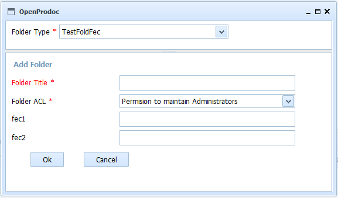

This form allows to create anyy kind of folder selecting the folder type and the ACL and filling all the metadata for the selected folder type. When selecting the folder type, automatically all the attributes for that folder type will be displayed under the folder selection combo in one page.
The forlder will be created under the current folder.

Required fields for each folder type are highlighted or mark with an '*'. By placing the cursor or mouse over each field, it will be displayed a tiptool with information on the field. The fields of type date / time values must be valid and follow the expected format, otherwise the field is cleared and the value is rejected.
In the event of an error (lack of user permissions, communication error, incorrect date, etc.), the operation is canceled and the user will be communicated the reason for the error.